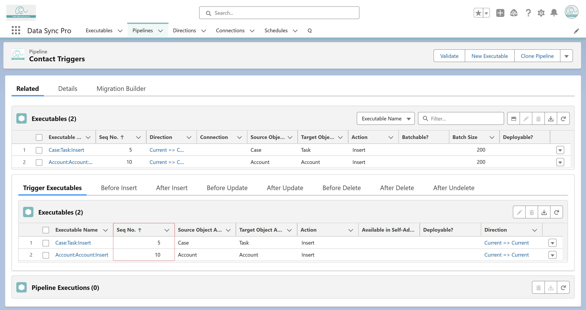

<article>
    <p>
      DSP trigger Executables are executed in the order based on the 
      <strong>Seq. No.</strong> associated with the triggering object for any 
      trigger event. To control the execution order, use the <strong>Seq. No.</strong> 
      to organize the sequence.
    </p>
  </article>
  
  